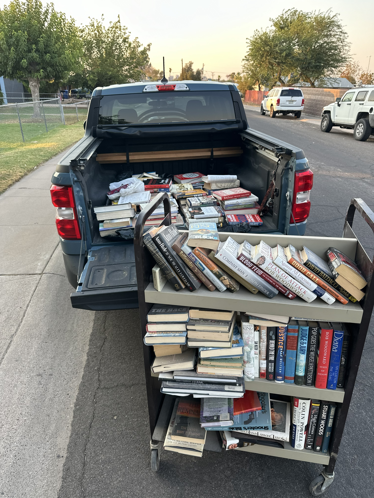
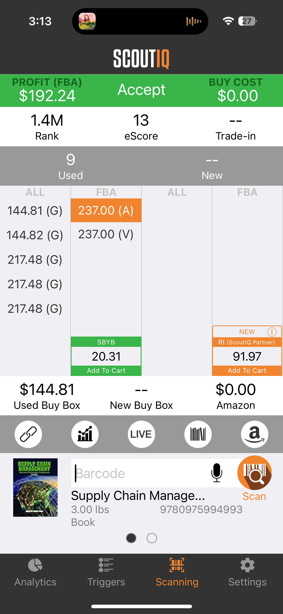
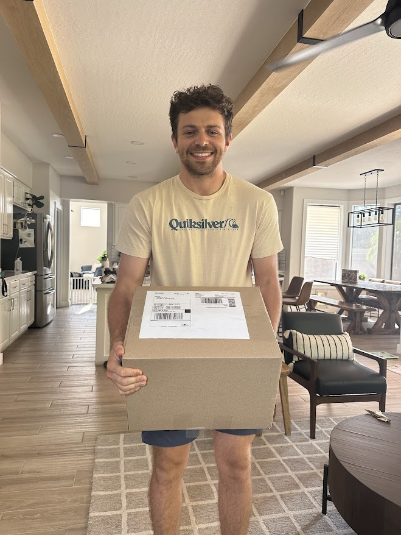
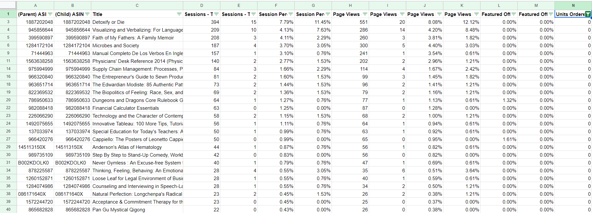

Overview
Over a focused 3-month experiment, I launched a complete Amazon FBA used-books
operation. I wanted to learn the economics, constraints, and operational realities of selling through Amazon’s
fulfillment network. I documented everything from sourcing to shipping, performed
full analytics on revenue and cost, and scaled the operation to four inbound FBA
shipments and ~500 evaluated books.
What I Built
-
Set up an Amazon Professional Seller account and learned the ungating process,
category restrictions, and fulfillment rules.
-
Sourced ~500 used books through bulk pickups, thrift stores, and pre-filtered collections.
-
Used tools such as ScoutIQ and Amazon Seller App to analyze
product rank, eScore, competition, and projected profitability.
-
Managed initail logistics: scanning inventory, prepping, labeling, packaging,
and submitting four FBA shipments totaling 55+ sellable units.
-
Conducted repricing analytics—monitoring page views, adjusting price floors/ceilings,
and evaluating stale inventory.
-
Tracked work hours, expenses, fees, and revenue to determine true hourly ROI.
Key Outcomes
-
Earned ~\$450 net profit over ~15 hours of work (~\$30/hour effective rate).
-
Identified optimal sourcing strategy: bulk pickups > thrift stores.
-
Learned Amazon’s fee structures, shipping costs, seller constraints, and delays.
-
Developed a repeatable framework for analyzing inventory and shipping batches.
-
Gained hands-on insight into the operational challenges of small-scale FBA reselling.
Tools & Technologies
- Amazon Seller Central
- ScoutIQ
Project Images



